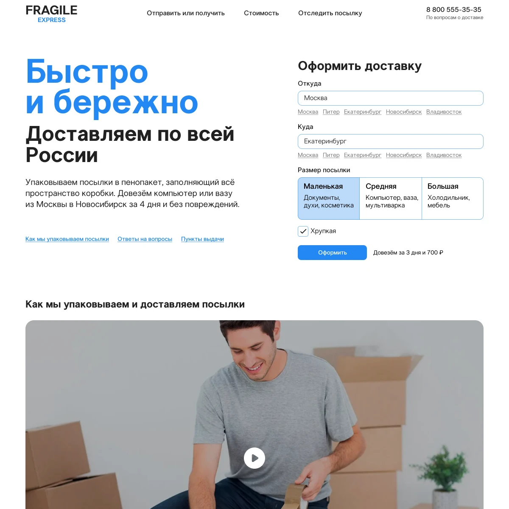
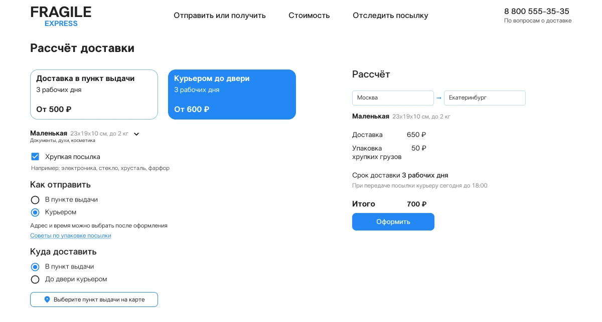
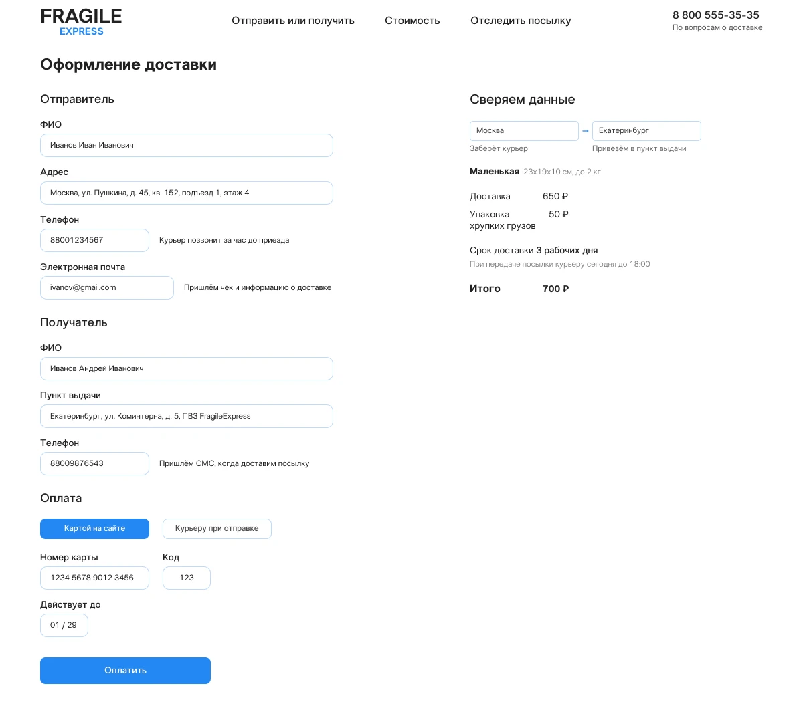

Курсовая работа в Школе дизайнеров Бюро Горбунова: сайт службы экспресс‑доставки посылок по России с расчётом стоимости и оформлением заявки онлайн. Задача — сделать понятный лендинг и две формы, которые помогают пользователю быстро рассчитать цену и оформить доставку без лишних шагов.
По заданию нужно придумать и спроектировать сервис доставки посылок, который работает по всей России и решает проблему «непонятной цены и сложного оформления» у типичных транспортных компаний. Проект делал в формате учебного кейса: жёсткий дедлайн, самостоятельная проработка концепции, текстов и интерфейса в духе подходов Бюро к пользе и ясности.

На первом экране — простое обещание сервиса, понятный подзаголовок и кнопка «Оформить доставку», сразу ведущая к форме расчёта стоимости. Дальше — блок «Как мы упаковываем и доставляем посылки» с видео, который снижает тревогу и показывает надёжность сервиса человеческим языком и живыми иллюстрациями.


Первая форма помогает быстро прикинуть стоимость: пользователь выбирает города, тип отправления
и способ доставки, сразу видит сумму и может переключать варианты на одном экране без перезагрузки.
Вторая форма собирает данные отправителя и получателя, способы оплаты и итог заказа;
справа отображается сводка по аявке, чтобы человек контролировал, что именно он оформляет.
Я сделал структуру страниц, прототипы, тексты, визуальный стиль, верстку интерфейса. В результате получился лендинг с логичным путём: от обещания сервиса до оплаченной заявки, который можно развивать в полноценный интерфейс личного кабинета и мобильное приложение.